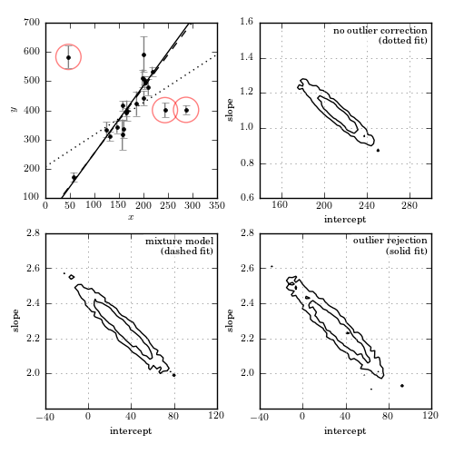

Perform Outlier Rejection with MCMC¶
Figure 8.9
Bayesian outlier detection for the same data as shown in figure 8.8. The top-left panel shows the data, with the fits from each model. The top-right panel shows the 1-sigma and 2-sigma contours for the slope and intercept with no outlier correction: the resulting fit (shown by the dotted line) is clearly highly affected by the presence of outliers. The bottom-left panel shows the marginalized 1-sigma and 2-sigma contours for a mixture model (eq. 8.67). The bottom-right panel shows the marginalized 1-sigma and 2-sigma contours for a model in which points are identified individually as “good” or “bad” (eq. 8.68). The points which are identified by this method as bad with a probability greater than 68% are circled in the first panel.
{kind=link}
[-------- 21% ] 5291 of 25000 complete in 0.5 sec
[-------------- 37% ] 9363 of 25000 complete in 1.0 sec
[-----------------54% ] 13636 of 25000 complete in 1.5 sec
[-----------------71%------- ] 17823 of 25000 complete in 2.0 sec
[-----------------88%------------- ] 22063 of 25000 complete in 2.5 sec
[-----------------100%-----------------] 25000 of 25000 complete in 2.9 sec
[- 2% ] 697 of 25000 complete in 0.5 sec
[-- 5% ] 1366 of 25000 complete in 1.0 sec
[--- 8% ] 2030 of 25000 complete in 1.5 sec
[---- 10% ] 2682 of 25000 complete in 2.0 sec
[----- 13% ] 3350 of 25000 complete in 2.5 sec
[------ 16% ] 4013 of 25000 complete in 3.0 sec
[------- 18% ] 4669 of 25000 complete in 3.5 sec
[-------- 21% ] 5300 of 25000 complete in 4.0 sec
[-------- 23% ] 5907 of 25000 complete in 4.5 sec
[--------- 26% ] 6511 of 25000 complete in 5.0 sec
[---------- 28% ] 7130 of 25000 complete in 5.5 sec
[----------- 30% ] 7740 of 25000 complete in 6.0 sec
[------------ 33% ] 8365 of 25000 complete in 6.5 sec
[------------- 35% ] 8972 of 25000 complete in 7.0 sec
[-------------- 38% ] 9581 of 25000 complete in 7.5 sec
[--------------- 40% ] 10206 of 25000 complete in 8.0 sec
[---------------- 43% ] 10814 of 25000 complete in 8.5 sec
[-----------------45% ] 11428 of 25000 complete in 9.0 sec
[-----------------48% ] 12056 of 25000 complete in 9.5 sec
[-----------------50% ] 12679 of 25000 complete in 10.0 sec
[-----------------53% ] 13310 of 25000 complete in 10.5 sec
[-----------------55%- ] 13930 of 25000 complete in 11.0 sec
[-----------------58%-- ] 14564 of 25000 complete in 11.5 sec
[-----------------60%--- ] 15182 of 25000 complete in 12.0 sec
[-----------------63%---- ] 15806 of 25000 complete in 12.5 sec
[-----------------65%---- ] 16429 of 25000 complete in 13.0 sec
[-----------------68%----- ] 17062 of 25000 complete in 13.5 sec
[-----------------70%------ ] 17686 of 25000 complete in 14.0 sec
[-----------------73%------- ] 18289 of 25000 complete in 14.5 sec
[-----------------75%-------- ] 18905 of 25000 complete in 15.0 sec
[-----------------78%--------- ] 19511 of 25000 complete in 15.5 sec
[-----------------80%---------- ] 20136 of 25000 complete in 16.0 sec
[-----------------82%----------- ] 20745 of 25000 complete in 16.5 sec
[-----------------85%------------ ] 21343 of 25000 complete in 17.0 sec
[-----------------87%------------- ] 21949 of 25000 complete in 17.5 sec
[-----------------90%-------------- ] 22559 of 25000 complete in 18.0 sec
[-----------------92%--------------- ] 23169 of 25000 complete in 18.5 sec
[-----------------95%---------------- ] 23766 of 25000 complete in 19.0 sec
[-----------------97%----------------- ] 24379 of 25000 complete in 19.5 sec
[-----------------99%----------------- ] 24993 of 25000 complete in 20.0 sec
[-----------------100%-----------------] 25000 of 25000 complete in 20.0 sec
[ 2% ] 558 of 25000 complete in 0.5 sec
[- 4% ] 1099 of 25000 complete in 1.0 sec
[-- 6% ] 1641 of 25000 complete in 1.5 sec
[--- 8% ] 2165 of 25000 complete in 2.0 sec
[---- 10% ] 2702 of 25000 complete in 2.5 sec
[---- 12% ] 3230 of 25000 complete in 3.0 sec
[----- 14% ] 3740 of 25000 complete in 3.5 sec
[------ 17% ] 4266 of 25000 complete in 4.0 sec
[------- 19% ] 4789 of 25000 complete in 4.5 sec
[-------- 21% ] 5278 of 25000 complete in 5.0 sec
[-------- 23% ] 5756 of 25000 complete in 5.5 sec
[--------- 25% ] 6259 of 25000 complete in 6.0 sec
[---------- 27% ] 6766 of 25000 complete in 6.5 sec
[----------- 28% ] 7242 of 25000 complete in 7.0 sec
[----------- 30% ] 7747 of 25000 complete in 7.5 sec
[------------ 33% ] 8253 of 25000 complete in 8.0 sec
[------------- 35% ] 8758 of 25000 complete in 8.5 sec
[-------------- 37% ] 9258 of 25000 complete in 9.0 sec
[-------------- 39% ] 9757 of 25000 complete in 9.5 sec
[--------------- 41% ] 10258 of 25000 complete in 10.0 sec
[---------------- 43% ] 10765 of 25000 complete in 10.5 sec
[-----------------45% ] 11264 of 25000 complete in 11.0 sec
[-----------------47% ] 11768 of 25000 complete in 11.5 sec
[-----------------49% ] 12260 of 25000 complete in 12.0 sec
[-----------------51% ] 12761 of 25000 complete in 12.5 sec
[-----------------53% ] 13262 of 25000 complete in 13.0 sec
[-----------------55% ] 13773 of 25000 complete in 13.5 sec
[-----------------57%- ] 14275 of 25000 complete in 14.0 sec
[-----------------59%-- ] 14757 of 25000 complete in 14.5 sec
[-----------------60%--- ] 15244 of 25000 complete in 15.0 sec
[-----------------62%--- ] 15748 of 25000 complete in 15.5 sec
[-----------------64%---- ] 16240 of 25000 complete in 16.0 sec
[-----------------66%----- ] 16743 of 25000 complete in 16.5 sec
[-----------------68%------ ] 17235 of 25000 complete in 17.0 sec
[-----------------70%------ ] 17729 of 25000 complete in 17.5 sec
[-----------------72%------- ] 18214 of 25000 complete in 18.0 sec
[-----------------74%-------- ] 18710 of 25000 complete in 18.5 sec
[-----------------76%--------- ] 19197 of 25000 complete in 19.0 sec
[-----------------78%--------- ] 19695 of 25000 complete in 19.5 sec
[-----------------80%---------- ] 20189 of 25000 complete in 20.0 sec
[-----------------82%----------- ] 20685 of 25000 complete in 20.5 sec
[-----------------84%------------ ] 21174 of 25000 complete in 21.0 sec
[-----------------86%------------ ] 21665 of 25000 complete in 21.5 sec
[-----------------88%------------- ] 22144 of 25000 complete in 22.0 sec
[-----------------90%-------------- ] 22642 of 25000 complete in 22.5 sec
[-----------------92%--------------- ] 23145 of 25000 complete in 23.0 sec
[-----------------94%--------------- ] 23653 of 25000 complete in 23.5 sec
[-----------------96%---------------- ] 24159 of 25000 complete in 24.0 sec
[-----------------98%----------------- ] 24657 of 25000 complete in 24.5 sec
[-----------------100%-----------------] 25000 of 25000 complete in 24.9 sec
# Author: Jake VanderPlas
# License: BSD
# The figure produced by this code is published in the textbook
# "Statistics, Data Mining, and Machine Learning in Astronomy" (2013)
# For more information, see http://astroML.github.com
# To report a bug or issue, use the following forum:
# https://groups.google.com/forum/#!forum/astroml-general
import numpy as np
from matplotlib import pyplot as plt
from astroML.datasets import fetch_hogg2010test
from astroML.plotting.mcmc import convert_to_stdev
# Hack to fix import issue in older versions of pymc
import scipy
import scipy.misc
scipy.derivative = scipy.misc.derivative
import pymc
#----------------------------------------------------------------------
# This function adjusts matplotlib settings for a uniform feel in the textbook.
# Note that with usetex=True, fonts are rendered with LaTeX. This may
# result in an error if LaTeX is not installed on your system. In that case,
# you can set usetex to False.
from astroML.plotting import setup_text_plots
setup_text_plots(fontsize=8, usetex=True)
np.random.seed(0)
#------------------------------------------------------------
# Get data: this includes outliers
data = fetch_hogg2010test()
xi = data['x']
yi = data['y']
dyi = data['sigma_y']
#----------------------------------------------------------------------
# First model: no outlier correction
# define priors on beta = (slope, intercept)
@pymc.stochastic
def beta_M0(value=np.array([2., 100.])):
"""Slope and intercept parameters for a straight line.
The likelihood corresponds to the prior probability of the parameters."""
slope, intercept = value
prob_intercept = 1 + 0 * intercept
# uniform prior on theta = arctan(slope)
# d[arctan(x)]/dx = 1 / (1 + x^2)
prob_slope = np.log(1. / (1. + slope ** 2))
return prob_intercept + prob_slope
@pymc.deterministic
def model_M0(xi=xi, beta=beta_M0):
slope, intercept = beta
return slope * xi + intercept
y = pymc.Normal('y', mu=model_M0, tau=dyi ** -2,
observed=True, value=yi)
M0 = dict(beta_M0=beta_M0, model_M0=model_M0, y=y)
#----------------------------------------------------------------------
# Second model: nuisance variables correcting for outliers
# This is the mixture model given in equation 17 in Hogg et al
# define priors on beta = (slope, intercept)
@pymc.stochastic
def beta_M1(value=np.array([2., 100.])):
"""Slope and intercept parameters for a straight line.
The likelihood corresponds to the prior probability of the parameters."""
slope, intercept = value
prob_intercept = 1 + 0 * intercept
# uniform prior on theta = arctan(slope)
# d[arctan(x)]/dx = 1 / (1 + x^2)
prob_slope = np.log(1. / (1. + slope ** 2))
return prob_intercept + prob_slope
@pymc.deterministic
def model_M1(xi=xi, beta=beta_M1):
slope, intercept = beta
return slope * xi + intercept
# uniform prior on Pb, the fraction of bad points
Pb = pymc.Uniform('Pb', 0, 1.0, value=0.1)
# uniform prior on Yb, the centroid of the outlier distribution
Yb = pymc.Uniform('Yb', -10000, 10000, value=0)
# uniform prior on log(sigmab), the spread of the outlier distribution
log_sigmab = pymc.Uniform('log_sigmab', -10, 10, value=5)
@pymc.deterministic
def sigmab(log_sigmab=log_sigmab):
return np.exp(log_sigmab)
# set up the expression for likelihood
def mixture_likelihood(yi, model, dyi, Pb, Yb, sigmab):
"""Equation 17 of Hogg 2010"""
Vi = dyi ** 2
Vb = sigmab ** 2
root2pi = np.sqrt(2 * np.pi)
L_in = (1. / root2pi / dyi
* np.exp(-0.5 * (yi - model) ** 2 / Vi))
L_out = (1. / root2pi / np.sqrt(Vi + Vb)
* np.exp(-0.5 * (yi - Yb) ** 2 / (Vi + Vb)))
return np.sum(np.log((1 - Pb) * L_in + Pb * L_out))
MixtureNormal = pymc.stochastic_from_dist('mixturenormal',
logp=mixture_likelihood,
dtype=np.float,
mv=True)
y_mixture = MixtureNormal('y_mixture', model=model_M1, dyi=dyi,
Pb=Pb, Yb=Yb, sigmab=sigmab,
observed=True, value=yi)
M1 = dict(y_mixture=y_mixture, beta_M1=beta_M1, model_M1=model_M1,
Pb=Pb, Yb=Yb, log_sigmab=log_sigmab, sigmab=sigmab)
#----------------------------------------------------------------------
# Third model: marginalizes over the probability that each point is an outlier.
# define priors on beta = (slope, intercept)
@pymc.stochastic
def beta_M2(value=np.array([2., 100.])):
"""Slope and intercept parameters for a straight line.
The likelihood corresponds to the prior probability of the parameters."""
slope, intercept = value
prob_intercept = 1 + 0 * intercept
# uniform prior on theta = arctan(slope)
# d[arctan(x)]/dx = 1 / (1 + x^2)
prob_slope = np.log(1. / (1. + slope ** 2))
return prob_intercept + prob_slope
@pymc.deterministic
def model_M2(xi=xi, beta=beta_M2):
slope, intercept = beta
return slope * xi + intercept
# qi is bernoulli distributed
# Note: this syntax requires pymc version 2.2
qi = pymc.Bernoulli('qi', p=1 - Pb, value=np.ones(len(xi)))
def outlier_likelihood(yi, mu, dyi, qi, Yb, sigmab):
"""likelihood for full outlier posterior"""
Vi = dyi ** 2
Vb = sigmab ** 2
root2pi = np.sqrt(2 * np.pi)
logL_in = -0.5 * np.sum(qi * (np.log(2 * np.pi * Vi)
+ (yi - mu) ** 2 / Vi))
logL_out = -0.5 * np.sum((1 - qi) * (np.log(2 * np.pi * (Vi + Vb))
+ (yi - Yb) ** 2 / (Vi + Vb)))
return logL_out + logL_in
OutlierNormal = pymc.stochastic_from_dist('outliernormal',
logp=outlier_likelihood,
dtype=np.float,
mv=True)
y_outlier = OutlierNormal('y_outlier', mu=model_M2, dyi=dyi,
Yb=Yb, sigmab=sigmab, qi=qi,
observed=True, value=yi)
M2 = dict(y_outlier=y_outlier, beta_M2=beta_M2, model_M2=model_M2,
qi=qi, Pb=Pb, Yb=Yb, log_sigmab=log_sigmab, sigmab=sigmab)
#------------------------------------------------------------
# plot the data
fig = plt.figure(figsize=(5, 5))
fig.subplots_adjust(left=0.1, right=0.95, wspace=0.25,
bottom=0.1, top=0.95, hspace=0.2)
# first axes: plot the data
ax1 = fig.add_subplot(221)
ax1.errorbar(xi, yi, dyi, fmt='.k', ecolor='gray', lw=1)
ax1.set_xlabel('$x$')
ax1.set_ylabel('$y$')
#------------------------------------------------------------
# Go through models; compute and plot likelihoods
models = [M0, M1, M2]
linestyles = [':', '--', '-']
labels = ['no outlier correction\n(dotted fit)',
'mixture model\n(dashed fit)',
'outlier rejection\n(solid fit)']
x = np.linspace(0, 350, 10)
bins = [(np.linspace(140, 300, 51), np.linspace(0.6, 1.6, 51)),
(np.linspace(-40, 120, 51), np.linspace(1.8, 2.8, 51)),
(np.linspace(-40, 120, 51), np.linspace(1.8, 2.8, 51))]
for i, M in enumerate(models):
S = pymc.MCMC(M)
S.sample(iter=25000, burn=5000)
trace = S.trace('beta_M%i' % i)
H2D, bins1, bins2 = np.histogram2d(trace[:, 0], trace[:, 1], bins=50)
w = np.where(H2D == H2D.max())
# choose the maximum posterior slope and intercept
slope_best = bins1[w[0][0]]
intercept_best = bins2[w[1][0]]
# plot the best-fit line
ax1.plot(x, intercept_best + slope_best * x, linestyles[i], c='k')
# For the model which identifies bad points,
# plot circles around points identified as outliers.
if i == 2:
qi = S.trace('qi')[:]
Pi = qi.astype(float).mean(0)
outlier_x = xi[Pi < 0.32]
outlier_y = yi[Pi < 0.32]
ax1.scatter(outlier_x, outlier_y, lw=1, s=400, alpha=0.5,
facecolors='none', edgecolors='red')
# plot the likelihood contours
ax = plt.subplot(222 + i)
H, xbins, ybins = np.histogram2d(trace[:, 1], trace[:, 0], bins=bins[i])
H[H == 0] = 1E-16
Nsigma = convert_to_stdev(np.log(H))
ax.contour(0.5 * (xbins[1:] + xbins[:-1]),
0.5 * (ybins[1:] + ybins[:-1]),
Nsigma.T, levels=[0.683, 0.955], colors='black')
ax.set_xlabel('intercept')
ax.set_ylabel('slope')
ax.grid(color='gray')
ax.xaxis.set_major_locator(plt.MultipleLocator(40))
ax.yaxis.set_major_locator(plt.MultipleLocator(0.2))
ax.text(0.98, 0.98, labels[i], ha='right', va='top',
bbox=dict(fc='w', ec='none', alpha=0.5),
transform=ax.transAxes)
ax.set_xlim(bins[i][0][0], bins[i][0][-1])
ax.set_ylim(bins[i][1][0], bins[i][1][-1])
ax1.set_xlim(0, 350)
ax1.set_ylim(100, 700)
plt.show()